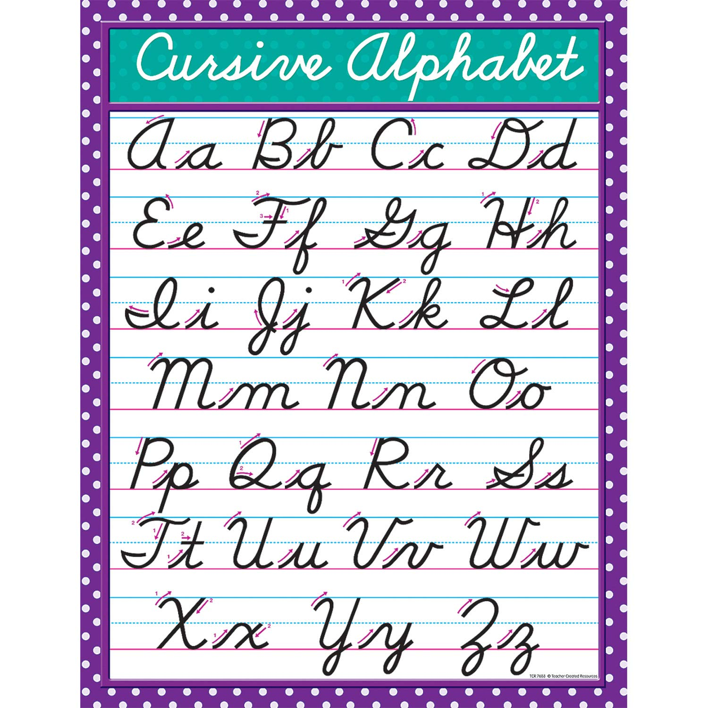

I can teach you how to write in cursive. I used to go too Catholic School, where I was made to write in cursive. I attended that school for over 5 years, so cursive is pretty well entrenched into my mind.
I'm familiar with cursive in this style:
The main things you have to know when writing in cursive are that you connects the characters to form a letter, but not the letters to each other. Furthermore, when writing in cursive, normally you finish the word first and then add marks after. For example the i dot or the cross to the t. In order to write the words, it's best to follow the motions seen in the photo. Psychologically, you also should be calm when writing, as ruxhing could ruin the appearence of the word. Practice makes perfect and I'm sure if I teach you, you'll be able to write in cursive.
© 2023 William’s about me